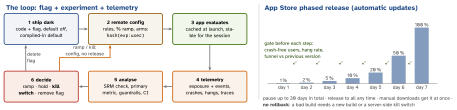

engineering · folio
In one line: Ship code dark behind a flag, turn it on for a hashed, random slice of users, log who was exposed, compare their metrics with control while guardrails (crashes, hangs, revenue) watch for harm, then ramp, hold or kill — without a new binary. On mobile this matters twice: a shipped build lives for months and the store rollout cannot be rolled back.
Download PDF Print view LaTeX source


Feature flags
| kind | purpose | lifetime · decided by |
|---|---|---|
| release | hide unfinished work, trunk-based dev | days–weeks · per build/env |
| experiment | A/B arms | weeks · per user, hashed |
| ops | kill switch, degrade under load | short or permanent · ops, at runtime |
| permission | premium, beta, internal | long · per user/entitlement |
- Evaluation: compiled-in defaults (first launch, offline) → last-known-good cache on disk → fetch at launch with a short timeout, applied at a safe point (next launch / before the screen builds) — never flip UI mid-session. Experiments read once per session.
- Kill switch: server-side off for a risky path without a release; test the off path too. Add a minimum-version / force-update switch before you need it.
- Local overrides: debug menu, launch arguments (
-newCheckout YESlands inUserDefaults’ argument domain), UI tests set flags explicitly — never depend on the live server. - Flag debt: owner + expiry per flag, delete at 100 %, lint for stale keys. Mobile twist: old app versions still read the key — keep a server default until they are gone. n flags = 2n paths.
A/B testing
- Randomisation unit = analysis unit: user id (stable across devices) > install id (resets on reinstall) > session.
- Bucketing:
hash(experimentKey + ":" + userId) mod 10000; arm = range. Deterministic, sticky, stateless; the salt makes experiments independent; ramping by widening a range keeps users in place. - Exposure logging: log
experiment_exposurewhen the user reaches the changed code, not at assignment; analyse exposed users only (otherwise the effect is diluted). - SRM (sample-ratio mismatch): 50/50 planned, 50.8/49.2 at large n → χ2 fails → assignment or logging bug; results void.
- Sample size (α = 0.05 two-sided, power 80 %): narm ≈16 σ2/δ2; conversion σ2 = p(1-p). 10 % → 11 %: 16 ·0.09/0.012 ≈ 14 400 per arm. Smaller effect → quadratically more users.
- Peeking: checking daily and stopping at the first p<0.05 inflates false positives far above 5 %. Fix the horizon (full weeks), or use a sequential test built for it.
- Guardrails: crash-free users, latency, revenue, uninstalls must not regress even when the primary metric wins. Many metrics → some “win” by chance.
Analytics event design
- Name
object_action, past tense, snake_case:checkout_started,item_added. A tracking plan (schema registry) types every property; validate in debug and CI. - Envelope:
event_id(UUID, server dedupe), client time + server receive time (skewed clocks), anonymous/user id, session id, app version + build, OS, device, active experiment arms. - No PII: no email, name, free text or precise location; pseudonymous ids; honour consent (ATT for cross-app tracking). The privacy manifest and App Store privacy label must match what you send.
- Transport: buffer → persisted queue → batch flush by count, time or app-backgrounding; gzip; retry with backoff; cap the queue (drop oldest, count drops);
event_idmakes retries idempotent.
Example — flags, bucketing, exposure
import CryptoKit
struct Flags: Codable { var newCheckout = false }
final class FlagStore { // read once per session
private(set) var current: Flags
init(cached: Data?) { // disk cache, else defaults
current = cached.flatMap { try? JSONDecoder()
.decode(Flags.self, from: $0) } ?? Flags() }
func refresh() async { /* fetch; save for NEXT launch */ }
}
func bucket(_ exp: String, _ user: String) -> Int { // 0..9999
let d = SHA256.hash(data: Data("\(exp):\(user)".utf8))
return Int(d.prefix(4).reduce(UInt32(0)) { $0 << 8 | UInt32($1) }
% 10_000) // NOT hashValue
}
let arm = bucket("checkout_v2", uid) < 5_000 ? "control" : "test"
analytics.track("experiment_exposure", // at the screen
["experiment": "checkout_v2", "arm": arm])Mobile observability
- Crash-free users = users with no crash / active users; crash-free sessions = sessions with no crash / sessions. Users hides frequency, sessions hides breadth — watch both, per version.
- Symbolication: upload dSYMs per build from CI, or stacks stay hex. Hangs (iOS hang rate, s/hour) ~ Android ANR. Traces: spans for cold start, screen load, API calls, trace id propagated to the backend. Breadcrumbs: last N screens, requests, logs attached to each crash; log non-fatal errors too. (Crashlytics, Sentry, Datadog: examples.)
- Release gate: compare the new version with the previous one over the same days and a minimum sample; pause the phased release on a regression; separate binary rollout from feature rollout.
Traps
- Bucketing with Swift
hashValue— seeded per process: arms change every launch. - Logging exposure at launch for every user — dilutes the effect.
- “Phased release lets me roll back” — it only pauses; ship a fix or flip a flag.
- Stopping when p dips under 0.05 (peeking); ignoring SRM.
- Randomising a signed-in feature by device: one user sees both arms on iPhone and iPad — pick the unit you analyse.